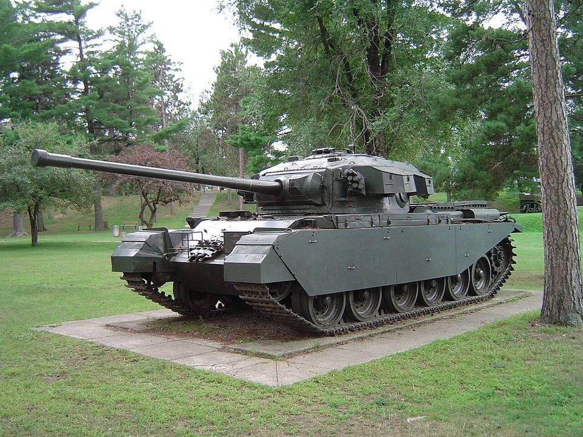

Centurion contra T-54/T-55: los grandes carros de la posguerra
Comparativa entre el Centurion británico y el T-54/T-55 soviético: diseño, cañón, protección y su enfrentamiento en Oriente Próximo.


El Centurion y el T-54/T-55 fueron los carros más extendidos de sus respectivos bloques en las dos décadas que siguieron a la Segunda Guerra Mundial, y se enfrentaron varias veces en Oriente Próximo.
El T-54/T-55 es el carro más fabricado de la historia, con estimaciones de entre 96.500 y más de 100.000 unidades. Es bajo, sencillo y robusto, con un cañón de 100 mm, pero su interior es muy estrecho y su cañón apenas puede apuntar hacia abajo, una limitación seria al disparar desde una ladera.
El Centurion es más alto y pesado, unas 51 toneladas, pero más cómodo y con un estabilizador que le permitía disparar en movimiento con cierta precisión. Desde finales de los años cincuenta montó el cañón L7 de 105 mm, uno de los mejores de su época.
Israel, con sus Centurion modernizados llamados Sho't, se enfrentó a los T-54 y T-55 árabes en 1967 y 1973. En los Altos del Golán, en 1973, unos pocos batallones de Sho't contuvieron un ataque sirio muy superior en número.
En resumen: El T-54/T-55 ganaba en cantidad, sencillez y silueta baja; el Centurion, en comodidad, precisión y en la capacidad de disparar desde posiciones elevadas.
Datos técnicos lado a lado
| Dato | Centurion | T-54 / T-55 |
|---|---|---|
| Origen | Reino Unido | Unión Soviética |
| En servicio | Desde 1945 | Desde 1948 |
| Producidos | 4.423 | Entre 96.500 y más de 100.000 (estimación) |
| Tripulación | 4 | 4 |
| Armamento principal | Cañón de 17 libras, después de 20 libras (84 mm) y finalmente L7 de 105 mm | Cañón rayado D-10T de 100 mm (43 proyectiles) |
| Motor | Rolls-Royce Meteor V12, gasolina | V-54 o V-55 V12, diésel |
| Potencia | 650 CV | Desde 500 CV |
| Velocidad máxima | 35 km/h | 51 km/h |
| Autonomía | Unos 100 km en carretera (versiones Mk 3, 5 y 6) | 325 km (610 km con depósitos externos) |
| Peso | Unas 51 t | — |
| Longitud | — | 9,00 m con el cañón |
| Anchura | — | 3,37 m |
| Altura | — | 2,40 m |
| Blindaje | — | Hasta 205 mm en el frontal de la torreta |
Datos de las fichas de la enciclopedia. Las fotos, sus autores y sus licencias se indican en cada ficha.